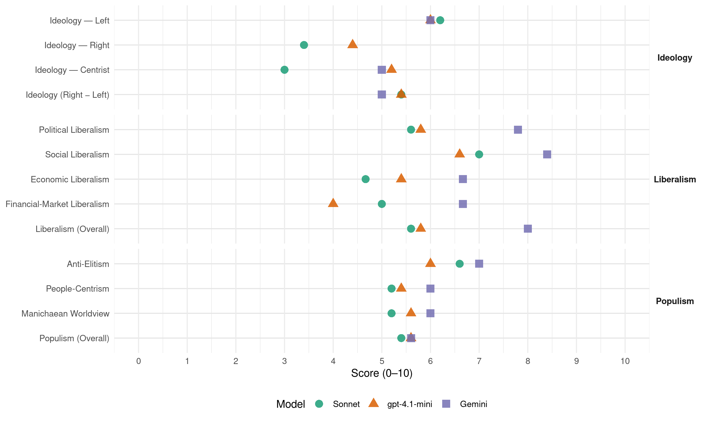

BQ (Canada, 2000)
manifesto_id 62901_200011
Get full text: This site shows derived annotations and short verbatim quotes only. The full manifesto text is © Manifesto Project / WZB — obtain it via manifesto-project.wzb.eu using the manifesto_id above.
Headline scores
| Dimension | Sonnet | gpt-4.1-mini | Gemini |
|---|---|---|---|
| Populism (Overall) | 5.4 | 5.6 | 5.6 |
| Anti-Elitism | 6.6 | 6.0 | 7.0 |
| People-Centrism | 5.2 | 5.4 | 6.0 |
| Manichaean Worldview | 5.2 | 5.6 | 6.0 |
| Ideology (Right − Left) | 5.4 | 5.4 | 5.0 |
| Liberalism (Overall) | 5.6 | 5.8 | 8.0 |
| Political Liberalism | 5.6 | 5.8 | 7.8 |
| Social Liberalism | 7.0 | 6.6 | 8.4 |
| Economic Liberalism | 4.7 | 5.4 | 6.7 |
| Financial-Market Liberalism | 5.0 | 4.0 | 6.7 |
Evidence per dimension
Economic Liberalism
Gemini · score 7.0 · verified · chunk 1
“compétitivité des PME face à leurs compétiteurs”
dégager une marge de manœuvre qui pourrait être utilisée afin de favoriser la compétitivité des PME face à leurs compétiteurs internationaux.
Gemini · score 7.0 · verified · chunk 2
“retour au libre-échange pour l’industrie”
LE BLOC QUÉBÉCOIS S’ENGAGE À RÉCLAMER LE RETOUR AU LIBRE-ÉCHANGE POUR L’INDUSTRIE DU BOIS D’ŒUVRE.
Gemini · score 6.0 · verified · chunk 4
“nous nous sommes montrés favorables au libre-échange dès le début”
partage les inquiétudes et les espoires de la population. Nous nous sommes montrés favorables au libre-échange dès le début des négociations avec les États-Unis
gpt-4.1-mini · score 5.0 · verified · chunk 1
“Le Québec a une des économies les plus ouvertes de la planète”
Le Québec a une des économies les plus ouvertes de la planète. Les exportations représentent, par exemple, 37 % du PIB québécois, ce qui le situe dans le peloton de tête des économies les plus ouvertes de l’OCDE.
gpt-4.1-mini · score 5.0 · verified · chunk 2
“Le Bloc Québécois considère que le gouvernement fédéral doit impérativement indexer ses transferts”
Cette entente est donc un pas dans la bonne direction, mais elle est loin de suffire à réparer les dommages causés par les coupures libérales. C’est pourquoi le Bloc Québécois considère que le gouvernement fédéral doit impérativement indexer ses transferts au Québec et aux provinces.
gpt-4.1-mini · score 5.0 · verified · chunk 3
“Le Bloc Québécois propose que le gouvernement fédéral indexe le TCSPS à hauteur de 10 milliards de dollars”
LE BLOC QUÉBÉCOIS PROPOSE, DANS LA SECTION FINANCES PUBLIQUES, QUE LE GOUVERNEMENT FÉDÉRAL INDEXE LE TCSPS À HAUTEUR DE 10 MILLIARDS DE DOLLARS SUR CINQ ANS DE FAÇON À CE QUE LE GOUVERNEMENT DU QUÉBEC PUISSE INJECTER LES FONDS NÉCESSAIRES AU BON FONCTIONNEMENT ET À L’AMÉLIORATION DE SON SYSTÈME D’ÉDUCATION.
gpt-4.1-mini · score 6.0 · verified · chunk 4
“libéralisation du commerce”
Le Bloc Québécois considère que cette libéralisation ne doit pas se faire aux dépens de la diversité culturelle et des droits sociaux, que ce soit à l’OMC ou dans le cadre de la Zone de libre-échange des Amériques (ZLEA).
gpt-4.1-mini · score 6.0 · verified · chunk 5
“Le Bloc Québécois propose que le gouvernement fédéral assume 40 % du financement du programme d’aide aux propriétaires”
Le Bloc Québécois propose que le gouvernement fédéral assume 40 % du financement du programme d’aide aux propriétaires de bâtiments résidentiels endommagés par la pyrite.
Sonnet · score 5.0 · verified · chunk 1
“compétitivité des PME face à leurs compétiteurs internationaux”
Une révision globale de ces mesures permettrait de dégager une marge de manœuvre qui pourrait être utilisée afin de favoriser la compétitivité des PME face à leurs compétiteurs internationaux
Sonnet · score 5.0 · mixed · chunk 2
“retour au libre-échange pour l’industrie du bois d’œuvre”
LE BLOC QUÉBÉCOIS S’ENGAGE À RÉCLAMER LE RETOUR AU LIBRE-ÉCHANGE POUR L’INDUSTRIE DU BOIS D’ŒUVRE
Sonnet · score 4.0 · verified · chunk 3
“aspects antidémocratiques de la mondialisation”
les jeunes Québécois sont entre autres à l’avant-garde de l’opposition aux aspects antidémocratiques de la mondialisation
Sonnet · score 5.0 · mixed · chunk 4
“favorables au libre-échange dès le début des négociations”
Nous nous sommes montrés favorables au libre-échange dès le début des négociations avec les États-Unis et nous continuerons à le faire. Par contre, le Bloc Québécois considère que cette libéralisation ne doit pas se faire aux dépens de la diversité culturelle
Sonnet · score 5.0 · verified · chunk 5
“déduction fiscale pour frais d’adoption internationale”
LE BLOC QUÉBÉCOIS PROPOSE D’INSTAURER UNE DÉDUCTION FISCALE POUR FRAIS D’ADOPTION INTERNATIONALE.
Financial-Market Liberalism
Gemini · score 7.0 · verified · chunk 1
“institutions financières”
les secteurs stratégiques, c’est-à-dire les secteurs qui sont au cœur de l’économie de tous les pays : les institutions financières et l’industrie pétrolière.
Gemini · score 6.0 · verified · chunk 2
“augmenter la capacité de nos institutions financières”
concourt à augmenter la capacité de nos institutions financières à affronter la concurrence mondiale
Gemini · score 7.0 · verified · chunk 3
“déclaration des opérations financières douteuses”
exigent des banques, des institutions financières, des casinos et des comptoirs de devises la tenue de documents et la déclaration des opérations financières douteuses.
gpt-4.1-mini · score 3.0 · verified · chunk 1
“obligation de signaler toute transaction de plus de 10 000 $ pour les institutions financières”
Le Bloc Québécois a obtenu l’adoption de mesures concrètes visant l’intensification de la lutte contre le crime organisé, notamment l’obligation de signaler toute transaction de plus de 10 000 $ pour les institutions financières et autres institutions où transigent d’importantes sommes d’argent, le retrait de la circulation des billets de 1 000 $.
gpt-4.1-mini · score 5.0 · verified · chunk 2
“Le ministre des Finances a déposé, le 13 juin 2000, un projet de loi visant à réformer les institutions financières”
Le ministre des Finances a déposé, le 13 juin 2000, un projet de loi visant à réformer les institutions financières. Ce projet de loi important est attendu depuis plus de sept ans.
Sonnet · score 5.0 · verified · chunk 1
“monnaie commune des Amériques”
Un débat sur une éventuelle monnaie commune des Amériques. ♦ Un débat sur le crime organisé
Sonnet · score 5.0 · mixed · chunk 2
“concurrence sur le plan international est de plus en plus vive”
Deuxièmement, la concurrence sur le plan international est de plus en plus vive. Même lorsqu’on regarde les six plus grandes banques au Canada
Sonnet · score 5.0 · verified · chunk 3
“recyclage financier des produits de la criminalité”
Loi visant à faciliter la répression du recyclage financier des produits de la criminalité, constituant le Centre d’analyse des opérations et déclarations financières
Sonnet · score 5.0 · verified · chunk 4
“stabilité monétaire”
Dans cette ère de mondialisation et d’ouverture des marchés, nombreux sommes-nous à rechercher une plus grande stabilité monétaire. D’ailleurs, qui peut nous blâmer, après la crise du peso mexicain
Political Liberalism
Gemini · score 8.0 · verified · chunk 1
“respect le plus strict des institutions parlementaires”
le Bloc Québécois entend bien continuer à œuvrer dans le respect le plus strict des institutions parlementaires canadiennes.
Gemini · score 7.0 · verified · chunk 2
“respect des champs de compétence des provinces”
EXIGERA DU GOUVERNEMENT FÉDÉRAL LE RESPECT DES CHAMPS DE COMPÉTENCE DES PROVINCES, NOTAMMENT AUX CHAPITRES
Gemini · score 8.0 · verified · chunk 3
“sont les piliers de la démocratie”
quand les gangs criminalisés s’attaquent aux députés et aux journalistes, ce sont les piliers de la démocratie qui sont ébranlés.
Gemini · score 8.0 · verified · chunk 4
“une discussion démocratique pleine et entière du contenu de ces traités”
La contrepartie de ce phénomène, une discussion démocratique pleine et entière du contenu de ces traités, est en régression depuis l’arrivée au pouvoir
Gemini · score 8.0 · verified · chunk 5
“une procédure transparente de nomination et de renouvellement qui assure une entière impartialité”
et que soit instaurée une procédure transparente de nomination et de renouvellement qui assure une entière impartialité et un choix fondé sur la compétence
gpt-4.1-mini · score 4.0 · verified · chunk 1
“le Bloc Québécois entend bien continuer à œuvrer dans le respect le plus strict des institutions parlementaires canadiennes”
Depuis 1990, année ou des députés ont commencé à siéger à la Chambre des Communes sous sa bannière, le Bloc Québécois a toujours mené son action dans le respect des institutions parlementaires. Cette attitude lui a permis d’acquérir la crédibilité qui est aujourd’hui la sienne et le Bloc Québécois entend bien continuer à œuvrer dans le respect le plus strict des institutions parlementaires canadiennes.
gpt-4.1-mini · score 6.0 · verified · chunk 2
“le gouvernement fédéral doit impérativement indexer ses transferts au Québec”
Cette entente est donc un pas dans la bonne direction, mais elle est loin de suffire à réparer les dommages causés par les coupures libérales. C’est pourquoi le Bloc Québécois considère que le gouvernement fédéral doit impérativement indexer ses transferts au Québec et aux provinces.
gpt-4.1-mini · score 6.0 · verified · chunk 3
“l’Assemblée nationale du Québec a adopté une résolution unanime exigeant la suspension du processus d’adoption de C-3”
Dénonçant l’approche répressive du nouveau projet de loi qui menace 30 ans d’expertise québécoise en matière de traitement de la criminalité juvénile, l’Assemblée nationale du Québec a adopté une résolution unanime exigeant la suspension du processus d’adoption de C-3 ou, à tout le moins, l’introduction d’une clause de retrait permettant au gouvernement du Québec de continuer à appliquer la Loi actuelle.
gpt-4.1-mini · score 6.0 · verified · chunk 4
“la Charte canadienne des droits et libertés”
L’affaire Sharpe (John Robin) a soulevé beaucoup d’indignation dans la population canadienne. Ce jugement de la Cour d’appel de la Colombie-Britannique invalidait les dispositions du Code criminel prohibant la possession simple de matériel pornographique juvénile sur la base d’une violation de la liberté d’expression prévue à l’article 2b) de la Charte canadienne des droits et libertés.
gpt-4.1-mini · score 7.0 · verified · chunk 5
“Le Bloc Québécois croit que le gouvernement fédéral a aujourd’hui, et aura demain – lorsque le Québec sera souverain – une responsabilité à l’égard de la minorité francophone au Canada”
Le Bloc Québécois croit que le gouvernement fédéral a aujourd’hui, et aura demain – lorsque le Québec sera souverain – une responsabilité à l’égard de la minorité francophone au Canada. Aussi, nous sommes favorables à la recommandation du sénateur Simard qui propose la mise en place d’un Fonds de réparations historiques.
Sonnet · score 5.0 · verified · chunk 1
“principe démocratique de la majorité absolue”
En adoptant la Loi sur la clarté, le gouvernement du Canada a violé le principe démocratique de la majorité absolue
Sonnet · score 5.0 · verified · chunk 2
“aspects antidémocratiques de la mondialisation”
Les jeunes Québécois sont entre autres à l’avant-garde de l’opposition aux aspects antidémocratiques de la mondialisation et ils l’ont montré avec l’AMI
Sonnet · score 5.0 · verified · chunk 3
“piliers de la démocratie qui sont ébranlés”
quand les gangs criminalisés s’attaquent aux députés et aux journalistes, ce sont les piliers de la démocratie qui sont ébranlés
Sonnet · score 6.0 · verified · chunk 4
“rendre plus transparente et démocratique la pratique”
Le Bloc Québécois a donc cherché à rendre plus transparente et démocratique la pratique d’adoption des traités internationaux au parlement
Sonnet · score 7.0 · verified · chunk 5
“procédure transparente de nomination et de renouvellement”
il est par conséquent primordial que cessent les nominations politiques au sein de la Commission de l’immigration et du statut de réfugié et que soit instaurée une procédure transparente de nomination et de renouvellement qui assure une entière impartialité
Liberalism (Overall)
Gemini · score 8.0 · verified · chunk 1
“respect le plus strict des institutions parlementaires”
le Bloc Québécois entend bien continuer à œuvrer dans le respect le plus strict des institutions parlementaires canadiennes.
Gemini · score 7.0 · verified · chunk 2
“retour au libre-échange pour l’industrie”
LE BLOC QUÉBÉCOIS S’ENGAGE À RÉCLAMER LE RETOUR AU LIBRE-ÉCHANGE POUR L’INDUSTRIE DU BOIS D’ŒUVRE.
Gemini · score 8.0 · verified · chunk 3
“sont les piliers de la démocratie”
quand les gangs criminalisés s’attaquent aux députés et aux journalistes, ce sont les piliers de la démocratie qui sont ébranlés.
Gemini · score 8.0 · verified · chunk 4
“une discussion démocratique pleine et entière du contenu de ces traités”
La contrepartie de ce phénomène, une discussion démocratique pleine et entière du contenu de ces traités, est en régression depuis l’arrivée au pouvoir
Gemini · score 9.0 · verified · chunk 5
“la persécution fondée sur le sexe ou l’orientation sexuelle comme motif de persécution”
de façon à inclure la persécution fondée sur le sexe ou l’orientation sexuelle comme motif de persécution
gpt-4.1-mini · score 4.0 · verified · chunk 1
“le Bloc Québécois entend bien continuer à œuvrer dans le respect le plus strict des institutions parlementaires canadiennes”
Depuis 1990, année ou des députés ont commencé à siéger à la Chambre des Communes sous sa bannière, le Bloc Québécois a toujours mené son action dans le respect des institutions parlementaires. Cette attitude lui a permis d’acquérir la crédibilité qui est aujourd’hui la sienne et le Bloc Québécois entend bien continuer à œuvrer dans le respect le plus strict des institutions parlementaires canadiennes.
gpt-4.1-mini · score 6.0 · verified · chunk 2
“Le Bloc Québécois considère que le gouvernement fédéral doit impérativement indexer ses transferts”
Cette entente est donc un pas dans la bonne direction, mais elle est loin de suffire à réparer les dommages causés par les coupures libérales. C’est pourquoi le Bloc Québécois considère que le gouvernement fédéral doit impérativement indexer ses transferts au Québec et aux provinces.
gpt-4.1-mini · score 6.0 · verified · chunk 3
“l’Assemblée nationale du Québec a adopté une résolution unanime exigeant la suspension du processus d’adoption de C-3”
Dénonçant l’approche répressive du nouveau projet de loi qui menace 30 ans d’expertise québécoise en matière de traitement de la criminalité juvénile, l’Assemblée nationale du Québec a adopté une résolution unanime exigeant la suspension du processus d’adoption de C-3 ou, à tout le moins, l’introduction d’une clause de retrait permettant au gouvernement du Québec de continuer à appliquer la Loi actuelle.
gpt-4.1-mini · score 6.0 · verified · chunk 4
“la Charte canadienne des droits et libertés”
L’affaire Sharpe (John Robin) a soulevé beaucoup d’indignation dans la population canadienne. Ce jugement de la Cour d’appel de la Colombie-Britannique invalidait les dispositions du Code criminel prohibant la possession simple de matériel pornographique juvénile sur la base d’une violation de la liberté d’expression prévue à l’article 2b) de la Charte canadienne des droits et libertés.
gpt-4.1-mini · score 7.0 · verified · chunk 5
“Le Bloc Québécois croit que le gouvernement fédéral a aujourd’hui, et aura demain – lorsque le Québec sera souverain – une responsabilité à l’égard de la minorité francophone au Canada”
Le Bloc Québécois croit que le gouvernement fédéral a aujourd’hui, et aura demain – lorsque le Québec sera souverain – une responsabilité à l’égard de la minorité francophone au Canada. Aussi, nous sommes favorables à la recommandation du sénateur Simard qui propose la mise en place d’un Fonds de réparations historiques.
Sonnet · score 5.0 · verified · chunk 1
“débat budgétaire démocratique et transparent”
La première étape d’un débat budgétaire démocratique et transparent consiste à produire des chiffres crédibles
Sonnet · score 5.0 · verified · chunk 2
“interdire l’utilisation de clauses discriminatoires”
LE BLOC QUÉBÉCOIS PROPOSERA UN PROJET DE LOI VISANT À INTERDIRE L’UTILISATION DE CLAUSES DISCRIMINATOIRES À L’ENCONTRE DES JEUNES TRAVAILLEURS OEUVRANT SOUS LA LÉGISLATION FÉDÉRALE
Sonnet · score 5.0 · verified · chunk 3
“libre accès des femmes à l’avortement”
le Bloc Québécois est contre la recriminalisation de l’avortement et en faveur du libre accès des femmes à l’avortement
Sonnet · score 6.0 · verified · chunk 4
“rendre plus transparente et démocratique la pratique”
Le Bloc Québécois a donc cherché à rendre plus transparente et démocratique la pratique d’adoption des traités internationaux au parlement
Sonnet · score 7.0 · verified · chunk 5
“persécution fondée sur le sexe ou l’orientation sexuelle”
LE BLOC QUÉBÉCOIS EXIGE DU GOUVERNEMENT FÉDÉRAL QU’IL S’ASSURE QUE LES AGENTS DE VISAS À L’ÉTRANGER INTERPRÈTENT LA DÉFINITION DE « RÉFUGIÉ » DE FAÇON À INCLURE LA PERSÉCUTION FONDÉE SUR LE SEXE OU L’ORIENTATION SEXUELLE COMME MOTIF DE PERSÉCUTION
Anti-Elitism
Gemini · score 8.0 · verified · chunk 1
“pratiques de patronage du Parti libéral”
Le Bloc Québécois a mis à jour les pratiques de patronage du Parti libéral du Canada.
Gemini · score 8.0 · verified · chunk 2
“abus et de fraude, de propagande et de patronage”
Tous ces cas d’abus et de fraude, de propagande et de patronage, qui se chiffrent à coups de milliards
Gemini · score 4.0 · verified · chunk 3
“cynisme destructeur et contre-productif”
ou la Stratégie emploi-jeunesse sont autant de gestes en apparence vertueux et bien visibles qui cachent en réalité un cynisme destructeur et contre-productif.
Gemini · score 7.0 · verified · chunk 4
“le copinage libéral Les libéraux ne cessent de faire des nominations politiques”
La Commission de l’immigration et du statut de réfugié : le copinage libéral Les libéraux ne cessent de faire des nominations politiques au sein de la Commission
Gemini · score 8.0 · verified · chunk 5
“le copinage libéral Les libéraux ne cessent de faire des nominations politiques”
La Commission de l’immigration et du statut de réfugié : le copinage libéral Les libéraux ne cessent de faire des nominations politiques au sein de la Commission
gpt-4.1-mini · score 7.0 · verified · chunk 1
“le gouvernement libéral a fait tout le contraire, dilapidant les fonds publics”
Lors de la campagne électorale de 1993, Jean Chrétien et le PLC promettaient à la fois une saine gestion financière et la fin de l’utilisation des fonds publics à des fins partisanes. Ils ont fait tout le contraire, dilapidant les fonds publics sans contrôle financier et sans se soucier des résultats, multipliant les cadeaux partisans, ouvrant ainsi la porte à la fraude et au détournement de fonds.
gpt-4.1-mini · score 7.0 · verified · chunk 2
“le gouvernement fédéral dispose de recettes fiscales beaucoup trop élevées”
Tous ces cas d’abus et de fraude, de propagande et de patronage, qui se chiffrent à coups de milliards de dollars, montrent bien que le gouvernement fédéral dispose de recettes fiscales beaucoup trop élevées par rapport à ses responsabilités.
gpt-4.1-mini · score 6.0 · verified · chunk 3
“le gouvernement libéral a multiplié, au cours des dernières années, les initiatives touchant à l’éducation postsecondaire”
Les empiètements improductifs de Jean Chrétien. Le gouvernement libéral de Jean Chrétien a multiplié, au cours des dernières années, les initiatives touchant à l’éducation postsecondaire et, dans chaque cas, il a réussi à faire plus de bien que de mal.
gpt-4.1-mini · score 7.0 · verified · chunk 4
“la politique sciemment anti-Québec de son gouvernement”
Derrière cette rhétorique fort louable en soi mais peu productrice de bienfaits tangibles, se cachent quatre réalités qui détonnent avec l’image voulue par le ministre : ♦ La politique sciemment anti-Québec de son gouvernement. ♦ L’incapacité de soumettre les intérêts économiques du Canada à sa propre rhétorique en matière des droits de la personne.
gpt-4.1-mini · score 3.0 · verified · chunk 5
“La Commission de l’immigration et du statut de réfugié : le copinage libéral”
La Commission de l’immigration et du statut de réfugié : le copinage libéral Les libéraux ne cessent de faire des nominations politiques au sein de la Commission de l’immigration et du statut de réfugié, alléguant que les personnes nommées possèdent toute l’expérience professionnelle requise pour occuper de tels postes.
Sonnet · score 8.0 · verified · chunk 1
“supercherie budgétaire des libéraux”
LA SUPERCHERIE BUDGÉTAIRE DES LIBÉRAUX. La première étape d’un débat budgétaire démocratique et transparent consiste à produire des chiffres crédibles
Sonnet · score 7.0 · verified · chunk 2
“abus et de fraude, de propagande et de patronage”
Tous ces cas d’abus et de fraude, de propagande et de patronage, qui se chiffrent à coups de milliards de dollars, montrent bien que le gouvernement fédéral dispose de recettes fiscales beaucoup trop élevées
Sonnet · score 6.0 · verified · chunk 3
“cynisme destructeur et contre-productif”
qui cachent en réalité un cynisme destructeur et contre-productif. La voie libérale : couper dans l’avenir
Sonnet · score 6.0 · verified · chunk 4
“les libéraux ont réduit les budgets de l’agriculture”
une politique claire et à long terme est urgente d’autant que les libéraux ont réduit les budgets de l’agriculture et quelque peu dilué leur discours à l’échelle internationale
Sonnet · score 6.0 · verified · chunk 5
“les libéraux ne cessent de faire des nominations politiques”
La Commission de l’immigration et du statut de réfugié : le copinage libéral. Les libéraux ne cessent de faire des nominations politiques au sein de la Commission de l’immigration et du statut de réfugié
Ideology — Centrist
Gemini · score 4.0 · verified · chunk 3
“cynisme destructeur et contre-productif”
ou la Stratégie emploi-jeunesse sont autant de gestes en apparence vertueux et bien visibles qui cachent en réalité un cynisme destructeur et contre-productif.
Gemini · score 5.0 · verified · chunk 4
“les citoyens n’acceptent plus les négociations faites au sein d’un club exclusif”
manifestations, certaines étant malheureusement violentes. Les citoyens n’acceptent plus les négociations faites au sein d’un club exclusif de gouvernements et
Gemini · score 6.0 · verified · chunk 5
“le copinage libéral Les libéraux ne cessent de faire des nominations politiques”
La Commission de l’immigration et du statut de réfugié : le copinage libéral Les libéraux ne cessent de faire des nominations politiques au sein de la Commission
gpt-4.1-mini · score 6.0 · verified · chunk 1
“le Bloc Québécois est fier de vous présenter cette somme de travail”
Le Bloc Québécois est fier de vous présenter cette somme de travail. Je vous souhaite une bonne lecture, sachant que, vous aussi, tirerez profit d’une autre victoire du Bloc Québécois au soir des élections générales.
gpt-4.1-mini · score 5.0 · verified · chunk 2
“LE BLOC QUÉBÉCOIS S’ENGAGE À DÉNONCER SYSTÉMATIQUEMENT”
LE BLOC QUÉBÉCOIS S’ENGAGE À DÉNONCER SYSTÉMATIQUEMENT LA SOUMISSION DES PROGRAMMES GOUVERNEMENTAUX ET DES SOCIÉTÉS D’ÉTAT À DES OBJECTIFS POLITIQUES.
gpt-4.1-mini · score 5.0 · verified · chunk 3
“le gouvernement fédéral a multiplié, au cours des dernières années, les initiatives touchant à l’éducation postsecondaire”
Les empiètements improductifs de Jean Chrétien. Le gouvernement libéral de Jean Chrétien a multiplié, au cours des dernières années, les initiatives touchant à l’éducation postsecondaire et, dans chaque cas, il a réussi à faire plus de bien que de mal.
gpt-4.1-mini · score 5.0 · verified · chunk 4
“la volonté incessante d’empêcher une promotion économique adéquate du Québec”
En somme, pour le gouvernement libéral de Jean Chrétien, le Québec tout entier devient un ennemi intérieur du Canada sur la scène internationale. Cela se traduit en pratique par une volonté incessante d’empêcher une promotion économique adéquate du Québec ailleurs dans le monde,
gpt-4.1-mini · score 5.0 · verified · chunk 5
“Le Bloc Québécois s’engage à établir des ponts entre les Premières Nations et le peuple québécois”
Le Bloc Québécois s’engage à établir des ponts entre les Premières Nations et le peuple québécois en tentant d’éliminer les préjugés réciproques encore existants entre nos peuples.
Sonnet · score 3.0 · verified · chunk 1
“défendre les intérêts du Québec”
le Bloc Québécois se donnait deux mandats : promouvoir l’idée de l’accession du Québec au statut d’État souverain et, d’ici là, défendre les intérêts du Québec
Sonnet · score 3.0 · verified · chunk 2
“intérêts du Québec dans ce développement”
le Bloc Québécois entend assurer les intérêts du Québec dans ce développement. La fusion des entreprises.
Sonnet · score 3.0 · verified · chunk 3
“les jeunes à l’avant-garde du Québec”
LES JEUNES À L’AVANT-GARDE DU QUÉBEC DU 21E SIÈCLE
Sonnet · score 3.0 · verified · chunk 4
“partage les inquiétudes et les espoirs de la population”
le Bloc Québécois s’intéresse de près à la mondialisation et partage les inquiétudes et les espoirs de la population
Sonnet · score 3.0 · verified · chunk 5
“l’avenir n’est pas dans l’opposition stérile”
Le Bloc Québécois est d’avis que l’avenir n’est pas dans l’opposition stérile mais plutôt dans le partenariat constructif
Ideology — Left
Gemini · score 6.0 · verified · chunk 1
“solidarité sociale”
Le Bloc Québécois défendra, en tout temps et pour tous les postes budgétaires, une allocation des surplus qui va dans le sens de la solidarité sociale.
Gemini · score 6.0 · verified · chunk 2
“lutter contre la pauvreté et la violence”
nécessaires pour lutter contre la pauvreté et la violence faite aux femmes en assurant un partage
Gemini · score 6.0 · verified · chunk 4
“les questions politiques et sociales sont irrémédiablement liées à l’économie”
nivellement par le bas et considérons que les questions politiques et sociales sont irrémédiablement liées à l’économie.
gpt-4.1-mini · score 6.0 · verified · chunk 1
“réduction du fardeau fiscal des particuliers de 73,4 milliards de dollars”
Le Bloc Québécois propose une réduction du fardeau fiscal des particuliers de 73,4 milliards de dollars sur 5 ans. Cette réduction devra être ciblée vers les personnes ayant un revenu inférieur à 80 000 dollars par année de façon à toucher 9 contribuables sur 10.
gpt-4.1-mini · score 6.0 · verified · chunk 2
“coupures budgétaires des libéraux ont particulièrement frappé les personnes”
Les coupures budgétaires des libéraux ont particulièrement frappé les personnes qui, avant les coupures budgétaires, étaient déjà dans une situation difficile.
gpt-4.1-mini · score 6.0 · verified · chunk 3
“Le Bloc Québécois s’est battu pendant des années pour que le Québec et les provinces obtiennent des fonds supplémentaires”
L’entente du 11 septembre entre les premiers ministres prévoit l’injection d’une somme supplémentaire de 17,9 milliards $ sur 5 ans par le gouvernement fédéral dans les transferts. Le Bloc Québécois s’est battu pendant des années pour que le Québec et les provinces obtiennent des fonds supplémentaires.
gpt-4.1-mini · score 6.0 · verified · chunk 4
“les droits de la personne”
LE BLOC QUÉBÉCOIS EXIGERA DU GOUVERNEMENT FÉDÉRAL QUE LA POLITIQUE DE COMMERCE INTERNATIONAL DU CANADA SOIT SOUMISE À SA POLITIQUE EN MATIÈRE DE DROIT DE LA PERSONNE.
gpt-4.1-mini · score 6.0 · verified · chunk 5
“Le Bloc Québécois considère qu’il est important d’agir pour que cessent les abus envers ces travailleuses immigrantes”
Le Bloc Québécois considère qu’il est important d’agir pour que cessent les abus envers ces travailleuses immigrantes particulièrement vulnérables.
Sonnet · score 6.0 · verified · chunk 1
“justice fiscale la plus élémentaire”
La justice fiscale la plus élémentaire veut que ce soit ceux qui ont souffert pour réduire le déficit qui bénéficient les premiers des surplus budgétaires
Sonnet · score 7.0 · verified · chunk 2
“lutter contre la pauvreté et la violence faite aux femmes”
QUE LA CHAMBRE S’EMPLOIE À METTRE EN PLACE LES MOYENS NÉCESSAIRES POUR LUTTER CONTRE LA PAUVRETÉ ET LA VIOLENCE FAITE AUX FEMMES EN ASSURANT UN PARTAGE PLUS ÉQUITABLE DE LA RICHESSE
Sonnet · score 6.0 · verified · chunk 3
“clauses discriminatoires dans les conventions collectives”
la société québécoise a débattu avec vigueur du problème des clauses discriminatoires dans les conventions collectives
Sonnet · score 6.0 · verified · chunk 4
“clauses à caractère social faisant directement référence”
LE BLOC QUÉBÉCOIS DEMANDERA AU GOUVERNEMENT FÉDÉRAL QUE DES clauses à caractère social faisant directement référence à l’obligation, pour les États, de respecter les règles contenues dans les sept conventions fondamentales du travail de l’OIT
Sonnet · score 6.0 · verified · chunk 5
“femmes immigrantes, qui comptent le plus haut taux de chômage”
Les femmes immigrantes, qui comptent le plus haut taux de chômage (15,4 %), sont les premières touchées par ce problème.
Ideology (Right − Left)
Gemini · score 6.0 · verified · chunk 1
“solidarité sociale”
Le Bloc Québécois défendra, en tout temps et pour tous les postes budgétaires, une allocation des surplus qui va dans le sens de la solidarité sociale.
Gemini · score 6.0 · verified · chunk 2
“lutter contre la pauvreté et la violence”
nécessaires pour lutter contre la pauvreté et la violence faite aux femmes en assurant un partage
Gemini · score 3.0 · verified · chunk 3
“cynisme destructeur et contre-productif”
ou la Stratégie emploi-jeunesse sont autant de gestes en apparence vertueux et bien visibles qui cachent en réalité un cynisme destructeur et contre-productif.
Gemini · score 5.0 · verified · chunk 4
“les questions politiques et sociales sont irrémédiablement liées à l’économie”
nivellement par le bas et considérons que les questions politiques et sociales sont irrémédiablement liées à l’économie.
Gemini · score 5.0 · verified · chunk 5
“le copinage libéral Les libéraux ne cessent de faire des nominations politiques”
La Commission de l’immigration et du statut de réfugié : le copinage libéral Les libéraux ne cessent de faire des nominations politiques au sein de la Commission
gpt-4.1-mini · score 6.0 · verified · chunk 1
“le Bloc Québécois affirme l’existence de la nation québécoise”
Le Bloc Québécois affirme l’existence de la nation québécoise, exige sa reconnaissance et défend son droit de choisir librement son avenir.
gpt-4.1-mini · score 5.0 · verified · chunk 2
“LE BLOC QUÉBÉCOIS S’ENGAGE À DÉNONCER SYSTÉMATIQUEMENT”
LE BLOC QUÉBÉCOIS S’ENGAGE À DÉNONCER SYSTÉMATIQUEMENT L’UTILISATION, PAR LE GOUVERNEMENT FÉDÉRAL, DES FONDS PUBLICS À DES FINS DE PROPAGANDE.
gpt-4.1-mini · score 5.0 · verified · chunk 3
“Le Bloc Québécois s’est battu pendant des années pour que le Québec et les provinces obtiennent des fonds supplémentaires”
L’entente du 11 septembre entre les premiers ministres prévoit l’injection d’une somme supplémentaire de 17,9 milliards $ sur 5 ans par le gouvernement fédéral dans les transferts. Le Bloc Québécois s’est battu pendant des années pour que le Québec et les provinces obtiennent des fonds supplémentaires.
gpt-4.1-mini · score 5.0 · verified · chunk 4
“la politique sciemment anti-Québec de son gouvernement”
Derrière cette rhétorique fort louable en soi mais peu productrice de bienfaits tangibles, se cachent quatre réalités qui détonnent avec l’image voulue par le ministre : ♦ La politique sciemment anti-Québec de son gouvernement. ♦ L’incapacité de soumettre les intérêts économiques du Canada à sa propre rhétorique en matière des droits de la personne.
gpt-4.1-mini · score 6.0 · verified · chunk 5
“Le Bloc Québécois considère qu’il est important d’agir pour que cessent les abus envers ces travailleuses immigrantes”
Le Bloc Québécois considère qu’il est important d’agir pour que cessent les abus envers ces travailleuses immigrantes particulièrement vulnérables.
Sonnet · score 6.0 · verified · chunk 1
“solidarité sociale”
LE BLOC QUÉBÉCOIS DÉFENDRA, EN TOUT TEMPS ET POUR TOUS LES POSTES BUDGÉTAIRES, UNE ALLOCATION DES SURPLUS QUI VA DANS LE SENS DE LA SOLIDARITÉ SOCIALE
Sonnet · score 6.0 · verified · chunk 2
“partage plus équitable de la richesse”
POUR LUTTER CONTRE LA PAUVRETÉ ET LA VIOLENCE FAITE AUX FEMMES EN ASSURANT UN PARTAGE PLUS ÉQUITABLE DE LA RICHESSE ENTRE LES FEMMES ET LES HOMMES AU CANADA ET DANS LE MONDE
Sonnet · score 5.0 · verified · chunk 3
“clauses discriminatoires dans les conventions collectives”
la société québécoise a débattu avec vigueur du problème des clauses discriminatoires dans les conventions collectives
Sonnet · score 5.0 · verified · chunk 4
“clauses à caractère social faisant directement référence”
LE BLOC QUÉBÉCOIS DEMANDERA AU GOUVERNEMENT FÉDÉRAL QUE DES clauses à caractère social faisant directement référence à l’obligation, pour les États, de respecter les règles contenues dans les sept conventions fondamentales du travail de l’OIT
Sonnet · score 5.0 · verified · chunk 5
“femmes immigrantes, qui comptent le plus haut taux de chômage”
Les femmes immigrantes, qui comptent le plus haut taux de chômage (15,4 %), sont les premières touchées par ce problème.
Ideology — Right
gpt-4.1-mini · score 5.0 · verified · chunk 1
“protéger la langue française sur son territoire”
LE BLOC QUÉBÉCOIS DÉFENDRA, À OTTAWA OU AILLEURS, LE DROIT DU QUÉBEC DE PROTÉGER LA LANGUE FRANÇAISE SUR SON TERRITOIRE.
gpt-4.1-mini · score 3.0 · verified · chunk 2
“LE BLOC QUÉBÉCOIS EXIGE LE DÉMANTÈLEMENT DU BUREAU D’INFORMATION DU CANADA”
LE BLOC QUÉBÉCOIS EXIGE LE DÉMANTÈLEMENT DU BUREAU D’INFORMATION DU CANADA ET LA FIN DES SUBVENTIONS AU CONSEIL POUR L’UNITÉ CANADIENNE.
gpt-4.1-mini · score 4.0 · verified · chunk 3
“le gouvernement fédéral maintient, vis-à-vis cette communauté, une attitude qui relève davantage d’impératifs politiques liés à l’unité nationale”
Le Bloc Québécois reconnaît, respecte et encourage son caractère hétérogène et diversifié. Pour sa part, le gouvernement fédéral maintient, vis-à-vis cette communauté, une attitude qui relève davantage d’impératifs politiques liés à l’unité nationale que du respect des liens qu’elle a tissés.
gpt-4.1-mini · score 3.0 · verified · chunk 4
“le gouvernement fédéral a consciemment tenté de faire échec à des efforts internationaux du gouvernement québécois”
Le gouvernement fédéral a consciemment tenté de faire échec à des efforts internationaux du gouvernement québécois : ♦ Il a empêché la rencontre du premier ministre Lucien Bouchard, avec le président du Mexique à l’automne 1999 lors de sa mission économique dans la région ♦ Dans le sillon de l’organisation d’une mission économique du vice-premier ministre du Québec, Bernard Landry, au Costa Rica et au Panama en janvier 2000, les Affaires étrangères canadiennes ont réussi à empêcher des rencontres de haut-niveau,
gpt-4.1-mini · score 7.0 · verified · chunk 5
“Contrôle de l’immigration par le Québec et le projet de loi sur l’immigration”
Contrôle de l’immigration par le Québec et le projet de loi sur l’immigration. En vertu de l’Accord Canada-Québec conclu en 1991, le Québec est seul responsable de la sélection des immigrants indépendants, soit les travailleurs et les gens d’affaires, de la sélection des réfugiés à l’étranger ainsi que de l’accueil et de l’intégration des immigrants sur son territoire.
Sonnet · score 5.0 · verified · chunk 1
“protection de la langue française”
au moins deux pilliers font largement consensus au Québec : la protection de la langue française et le droit du Québec de décider seul de son avenir politique
Sonnet · score 3.0 · verified · chunk 2
“pertinence de maintenir des règles de propriété canadienne”
la pertinence de maintenir des règles de propriété canadienne se posera notamment dans le secteur des télécommunications et de la radiodiffusion
Sonnet · score 3.0 · verified · chunk 3
“la culture québécoise au rang de composante régionale”
tente ainsi de réduire la culture québécoise au rang de composante régionale de la culture canadienne
Sonnet · score 2.0 · verified · chunk 4
“Contrôle de l’immigration par le Québec”
Contrôle de l’immigration par le Québec et le projet de loi sur l’immigration. En vertu de l’Accord Canada-Québec conclu en 1991
Sonnet · score 4.0 · verified · chunk 5
“Contrôle de l’immigration par le Québec”
Contrôle de l’immigration par le Québec et le projet de loi sur l’immigration. En vertu de l’Accord Canada-Québec conclu en 1991, le Québec est seul responsable de la sélection des immigrants
Manichaean Worldview
Gemini · score 6.0 · verified · chunk 1
“camisole de force antidémocratique”
le gouvernement libéral tente d’enfermer le Québec au sein du Canada, dans une camisole de force antidémocratique.
Gemini · score 7.0 · verified · chunk 2
“un cynisme destructeur et contre-productif”
vertueux et bien visibles qui cachent en réalité un cynisme destructeur et contre-productif.
Gemini · score 5.0 · verified · chunk 4
“le Québec tout entier devient un ennemi intérieur du Canada”
En somme, pour le gouvernement libéral de Jean Chrétien, le Québec tout entier devient un ennemi intérieur du Canada sur la scène internationale.
gpt-4.1-mini · score 7.0 · verified · chunk 1
“le gouvernement fédéral à le combattre sur la scène internationale”
Non seulement l’absence du Québec des forums internationaux lui nuit, mais l’appareil diplomatique du Canada, plutôt que d’appuyer le Québec, se voit contraint par le gouvernement fédéral à le combattre sur la scène internationale.
gpt-4.1-mini · score 6.0 · verified · chunk 2
“opposition aux aspects antidémocratiques de la mondialisation”
Les jeunes Québécois sont entre autres à l’avant-garde de l’opposition aux aspects antidémocratiques de la mondialisation et ils l’ont montré avec l’AMI, qu’ils ont contribué à mettre en échec.
gpt-4.1-mini · score 5.0 · verified · chunk 3
“le gouvernement fédéral ne fait pas du développement durable une priorité et échoue lamentablement”
Malheureusement, à la suite des deux derniers mandats libéraux, force est de constater que le gouvernement fédéral ne fait pas du développement durable une priorité et qu’il n’a pas su s’acquitter de manière adéquate de la tâche qui lui revient en environnement.
gpt-4.1-mini · score 6.0 · verified · chunk 4
“un ennemi intérieur du Canada”
En somme, pour le gouvernement libéral de Jean Chrétien, le Québec tout entier devient un ennemi intérieur du Canada sur la scène internationale. Cela se traduit en pratique par une volonté incessante d’empêcher une promotion économique adéquate du Québec ailleurs dans le monde,
gpt-4.1-mini · score 4.0 · verified · chunk 5
“Le gouvernement fédéral actuel laissent croire que ses politiques sont improvisées”
Les recommandations oubliées de la Commission royale sur les peuples Autochtones. Les agissements du gouvernement fédéral actuel laissent croire que ses politiques sont improvisées au fur et à mesure que surviennent les événements et les crises.
Sonnet · score 7.0 · verified · chunk 1
“camisole de force antidémocratique”
le gouvernement libéral tente d’enfermer le Québec au sein du Canada, dans une camisole de force antidémocratique
Sonnet · score 6.0 · verified · chunk 2
“refusé de prendre ses véritables responsabilités”
il a refusé de prendre ses véritables responsabilités en matière d’éducation : transférer ses énormes ressources fiscales vers les besoins en éducation postsecondaire
Sonnet · score 4.0 · verified · chunk 3
“gouvernement d’une autre époque”
Jean Chrétien refuse d’en entendre parler. Il finira par plier mais, une fois de plus, le Québec devra se mobiliser pour faire comprendre l’évidence à ce gouvernement d’une autre époque.
Sonnet · score 5.0 · verified · chunk 4
“le Québec tout entier devient un ennemi intérieur”
pour le gouvernement libéral de Jean Chrétien, le Québec tout entier devient un ennemi intérieur du Canada sur la scène internationale
Sonnet · score 4.0 · verified · chunk 5
“mauvaise foi du gouvernement fédéral lors des négociations”
Il faut également déplorer le fait qu’en raison de la mauvaise foi du gouvernement fédéral lors des négociations avec les Premières Nations
People-Centrism
Gemini · score 7.0 · verified · chunk 1
“la vision d’un peuple et celle”
Il rétablit la concordance et la légitimité entre la vision d’un peuple et celle de ses représentantes
Gemini · score 5.0 · verified · chunk 2
“les plus démunis pourront avoir accès”
LE BLOC QUÉBÉCOIS S’ASSURERA QUE LES PLUS DÉMUNIS POURRONT AVOIR ACCÈS À UN SYSTÈME BANCAIRE EFFICACE
Gemini · score 6.0 · verified · chunk 4
“les citoyens n’acceptent plus les négociations faites au sein d’un club exclusif”
manifestations, certaines étant malheureusement violentes. Les citoyens n’acceptent plus les négociations faites au sein d’un club exclusif de gouvernements et
gpt-4.1-mini · score 6.0 · verified · chunk 1
“le Bloc Québécois affirme l’existence de la nation québécoise”
Le Bloc Québécois affirme l’existence de la nation québécoise, exige sa reconnaissance et défend son droit de choisir librement son avenir.
gpt-4.1-mini · score 5.0 · verified · chunk 2
“LE BLOC QUÉBÉCOIS S’ENGAGE À DÉNONCER SYSTÉMATIQUEMENT”
LE BLOC QUÉBÉCOIS S’ENGAGE À DÉNONCER SYSTÉMATIQUEMENT L’UTILISATION, PAR LE GOUVERNEMENT FÉDÉRAL, DES FONDS PUBLICS À DES FINS DE PROPAGANDE.
gpt-4.1-mini · score 5.0 · verified · chunk 3
“Les jeunes Québécois sont entre autres à l’avant-garde de l’opposition aux aspects antidémocratiques de la mondialisation”
Les jeunes Québécois s’inscrivent parfaitement dans l’accélération de la mondialisation, avec ses bons et ses mauvais côtés. Les jeunes Québécois sont entre autres à l’avant-garde de l’opposition aux aspects antidémocratiques de la mondialisation et ils l’ont montré avec l’AMI, qu’ils ont contribué à mettre en échec.
gpt-4.1-mini · score 6.0 · verified · chunk 4
“le peuple québécois”
il donne une image tronquée de la réalité québécoise en niant l’existence du peuple et de la culture québécoise. Pourtant, au sein d’autres fédérations, la volonté des membres fédérés de promouvoir leurs intérêts, leurs différences et leurs spécificités ne semblent pas poser problème.
gpt-4.1-mini · score 5.0 · verified · chunk 5
“Le Bloc Québécois s’engage à établir des ponts entre les Premières Nations et le peuple québécois”
Le Bloc Québécois s’engage à établir des ponts entre les Premières Nations et le peuple québécois en tentant d’éliminer les préjugés réciproques encore existants entre nos peuples.
Sonnet · score 7.0 · verified · chunk 1
“défendre les intérêts du Québec”
le Bloc Québécois a toujours mené son action dans le respect des institutions parlementaires… défendre les intérêts du Québec sur la scène fédérale
Sonnet · score 5.0 · verified · chunk 2
“les jeunes familles québécoises puissent en profiter”
LE BLOC QUÉBÉCOIS EXIGE DU GOUVERNEMENT FÉDÉRAL QU’IL REPRENNE LES NÉGOCIATIONS AVEC LE GOUVERNEMENT DU QUÉBEC AFIN QUE LES JEUNES FAMILLES QUÉBÉCOISES PUISSENT EN PROFITER DANS LES MEILLEURS DÉLAIS
Sonnet · score 5.0 · verified · chunk 3
“les jeunes restent à l’avant-garde”
Cependant, les jeunes restent à l’avant-garde des mutations que connaissent les sociétés
Sonnet · score 5.0 · verified · chunk 4
“les consommateurs sont en droit de savoir”
LE BLOC QUÉBÉCOIS CONTINUERA À RÉCLAMER L’ÉTIQUETAGE DES OGM PARCE QUE les consommateurs sont en droit de savoir et de choisir librement ce qu’ils mangent
Sonnet · score 4.0 · verified · chunk 5
“la démocratie se vit au jour le jour”
La démocratie ne se résume pas et ne doit pas se résumer à un vaste débat électoral de quelques semaines. La démocratie se vit au jour le jour, partout, tout le temps.
Populism (Overall)
Gemini · score 7.0 · verified · chunk 1
“pratiques de patronage du Parti libéral”
Le Bloc Québécois a mis à jour les pratiques de patronage du Parti libéral du Canada.
Gemini · score 7.0 · verified · chunk 2
“abus et de fraude, de propagande et de patronage”
Tous ces cas d’abus et de fraude, de propagande et de patronage, qui se chiffrent à coups de milliards
Gemini · score 3.0 · verified · chunk 3
“cynisme destructeur et contre-productif”
ou la Stratégie emploi-jeunesse sont autant de gestes en apparence vertueux et bien visibles qui cachent en réalité un cynisme destructeur et contre-productif.
Gemini · score 6.0 · verified · chunk 4
“le Québec tout entier devient un ennemi intérieur du Canada”
En somme, pour le gouvernement libéral de Jean Chrétien, le Québec tout entier devient un ennemi intérieur du Canada sur la scène internationale.
Gemini · score 5.0 · verified · chunk 5
“le copinage libéral Les libéraux ne cessent de faire des nominations politiques”
La Commission de l’immigration et du statut de réfugié : le copinage libéral Les libéraux ne cessent de faire des nominations politiques au sein de la Commission
gpt-4.1-mini · score 7.0 · verified · chunk 1
“le Bloc Québécois affirme l’existence de la nation québécoise”
Le Bloc Québécois affirme l’existence de la nation québécoise, exige sa reconnaissance et défend son droit de choisir librement son avenir.
gpt-4.1-mini · score 6.0 · verified · chunk 2
“LE BLOC QUÉBÉCOIS S’ENGAGE À DÉNONCER SYSTÉMATIQUEMENT”
LE BLOC QUÉBÉCOIS S’ENGAGE À DÉNONCER SYSTÉMATIQUEMENT L’UTILISATION, PAR LE GOUVERNEMENT FÉDÉRAL, DES FONDS PUBLICS À DES FINS DE PROPAGANDE.
gpt-4.1-mini · score 5.0 · verified · chunk 3
“le gouvernement libéral a multiplié, au cours des dernières années, les initiatives touchant à l’éducation postsecondaire”
Les empiètements improductifs de Jean Chrétien. Le gouvernement libéral de Jean Chrétien a multiplié, au cours des dernières années, les initiatives touchant à l’éducation postsecondaire et, dans chaque cas, il a réussi à faire plus de bien que de mal.
gpt-4.1-mini · score 6.0 · verified · chunk 4
“la politique sciemment anti-Québec de son gouvernement”
Derrière cette rhétorique fort louable en soi mais peu productrice de bienfaits tangibles, se cachent quatre réalités qui détonnent avec l’image voulue par le ministre : ♦ La politique sciemment anti-Québec de son gouvernement. ♦ L’incapacité de soumettre les intérêts économiques du Canada à sa propre rhétorique en matière des droits de la personne.
gpt-4.1-mini · score 4.0 · verified · chunk 5
“La Commission de l’immigration et du statut de réfugié : le copinage libéral”
La Commission de l’immigration et du statut de réfugié : le copinage libéral Les libéraux ne cessent de faire des nominations politiques au sein de la Commission de l’immigration et du statut de réfugié, alléguant que les personnes nommées possèdent toute l’expérience professionnelle requise pour occuper de tels postes.
Sonnet · score 7.0 · verified · chunk 1
“patronage, sa gestion de l’information”
Le gouvernement libéral, par son gaspillage, son patronage, sa gestion de l’information et ses activités de propagande, a fait exactement l’inverse
Sonnet · score 6.0 · verified · chunk 2
“abus et de fraude, de propagande et de patronage”
Tous ces cas d’abus et de fraude, de propagande et de patronage, qui se chiffrent à coups de milliards de dollars, montrent bien que le gouvernement fédéral dispose de recettes fiscales beaucoup trop élevées
Sonnet · score 5.0 · verified · chunk 3
“cynisme destructeur et contre-productif”
qui cachent en réalité un cynisme destructeur et contre-productif. La voie libérale : couper dans l’avenir
Sonnet · score 5.0 · verified · chunk 4
“les libéraux ont réduit les budgets de l’agriculture”
une politique claire et à long terme est urgente d’autant que les libéraux ont réduit les budgets de l’agriculture et quelque peu dilué leur discours
Sonnet · score 4.0 · verified · chunk 5
“les libéraux ne cessent de faire des nominations politiques”
La Commission de l’immigration et du statut de réfugié : le copinage libéral. Les libéraux ne cessent de faire des nominations politiques au sein de la Commission
Social Liberalism